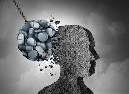

Le sostanze psicotrope sono sostanze che alterano il funzionamento del sistema nervoso centrale e possono avere effetti sullo stato mentale, l'umore, la coscienza e il comportamento di una persona. Queste sostanze possono essere utilizzate per scopi ricreativi o terapeutici, ma possono anche essere oggetto di abuso.
Nello sport, l'uso di sostanze psicotrope è generalmente vietato e considerato una forma di doping. Le organizzazioni sportive, come il Comitato Olimpico Internazionale (COI) e le varie federazioni sportive, hanno regolamenti e test antidoping per prevenire l'uso di tali sostanze e preservare l'equità e l'integrità delle competizioni.
Le sostanze psicotrope più comunemente associate al doping nello sport sono i farmaci stimolanti, come l'anfetamina e la cocaina, che possono aumentare temporaneamente la resistenza e l'energia fisica.

Queste sostanze possono migliorare le prestazioni atletiche, ma sono considerate illegali e il loro utilizzo può comportare squalifiche e sanzioni per gli atleti.
Altre sostanze psicotrope che possono essere utilizzate nello sport includono gli oppioidi, che possono alleviare il dolore e influenzare la percezione della fatica, e i sedativi/ipnotici, che possono essere utilizzati per ridurre l'ansia e favorire il sonno. Tuttavia, anche queste sostanze possono essere soggette a restrizioni e test antidoping.
È importante sottolineare che non tutte le sostanze psicotrope sono vietate nello sport. Alcune sostanze possono essere utilizzate a fini terapeutici, ma solo con l'approvazione di un medico e previa autorizzazione dalle autorità sportive competenti.
L'uso di sostanze psicotrope nello sport può comportare gravi conseguenze per la salute degli atleti e può compromettere l'integrità delle competizioni. Pertanto, è fondamentale promuovere l'educazione sulle sostanze psicotrope e applicare misure rigorose per prevenire il doping e garantire un ambiente sportivo pulito e sicuro.